Hint
If you test our scene, you will see that the desk and the chair appear to be “interactive”. If you move the mouse cursor over them, the pointer will change shape and a caption is displayed. That’s because both the desk and the chair are entities and they have the “Interactive” property set to true. But what if we wanted to make interactive a part of the background image? Do we need to create extra entities for all objects we need to be interactive? Well, yes and no. SceneEdit allows you to define so called “region entities”. They act just like the regular entities, but they don’t need a graphics representation (i.e. you don’t have to paint a special image for them). They are simply defined by a region within the scene.
We will make a few more objects interactive in our scene, namely the door, the closet and the window.
Open our “MyScene.scene” file in SceneEdit.
To add a region entity, press the “Add entity” button and then select the “Add region entity” command.
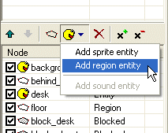
A new entity will be created. And from now it’s easy. You can change its name and caption in the properties window and you can edit the entity’s region exactly the same way as you edit the regular regions.
Add three region entities into the scene: “door”, “closet” and “window”:
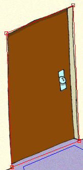 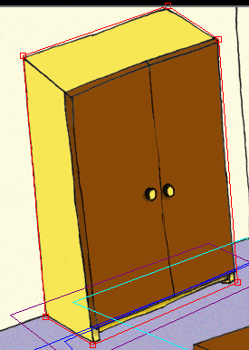 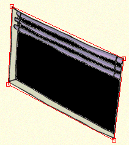
Note that the order of the entities and regions is important! We already learned why it’s important for scene layout, but it’s also important for the user interaction. When the engine determines which object is the mouse pointer over, it scans through all the scene nodes from the top most ones to the bottom ones.
In our scene the ordering of entities doesn’t really matter, because they don’t overlap but you should keep this in your mind.
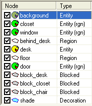
If you run the game and test the scene, the door, the closet and the window should become “interactive” objects.
You have noticed that the mouse cursor changes when it’s over an interactive object. Those are the two predefined mouse cursors – standard and active (you can change them in ProjectMan in game properties). But you can also assign special mouse cursors to certain objects. Let’s say we want the mouse cursor to change its shape when it’s over the door in our scene. It’s very simple. All the cursors are actually sprites and you can assign them to scene entities using the SceneEdit.
Switch to SceneEdit and select the “door” entity.
|
|
You can quickly select an entity in SceneEdit by double clicking it directly in the scene view. |
Look at the “Entity properties” window, there is a “Cursor” property. Click the “…” button near the cursor property and SceneEdit will ask you to specify a sprite file to be used as a mouse pointer. It the tutorial project, there are a few mouse pointers prepared in a “data\sprites\system” folder. Browse to this folder, select an “arrow_left.sprite” file and click OK. The cursor property will change its value. Now it points to the selected sprite file.
|
|
If you need to remove an assigned cursor or sprite file, just click the “…” button and then press the “Cancel” button in the file selection dialog. SceneEdit will ask you whether a currently assigned file should be removed. |
Save the scene and run the game. Now if you move the mouse pointer over the door, the pointer should change its shape to an orange arrow.
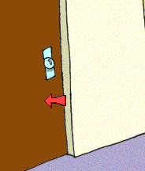
Our scene objects now appear to be interactive. But if you click them nothing happens. We need to assign some kind of logic to them. And the game logic is represented by the scripts. The scripts are text files, containing a piece of a simple program. The scripts are described in depth in another chapter of this documentation. In this tutorial we will only learn the basics.
We will add a script to the “desk” entity. We must create the script first. The easiest way of creating the script is using the template facility of the ProjectMan tool. We used it several times before and we will do exactly the same for the script. In ProjectMan, go to the “MyScene” folder and expand its branch in the project tree. The “MyScene” folder should have one sub-folder, called “scr”. That’s where the scripts for the scene are stored. Right-click the “scr” folder and then select the “Add script” command.
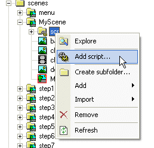
In the template selection dialog, select the “scene object” template and change the name to “desk”, then click OK. A new script will be generated in the “scr” folder.
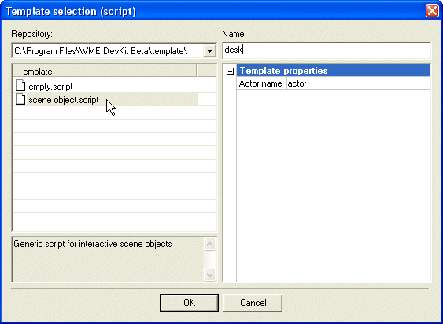
Open our “MyScene.scene” file in SceneEdit. We want to modify the “desk” entity so select it. You can either select it by highlighting the “desk” item in the node list or by double-clicking the desk in the scene view window. Look at the properties window, there’s a “Scripts…” button. Press it and a script assignment dialog will appear. In this window you can assign one or more script to the selected object. Press the “Add script” button.
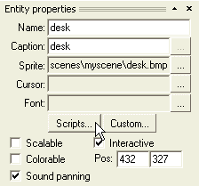 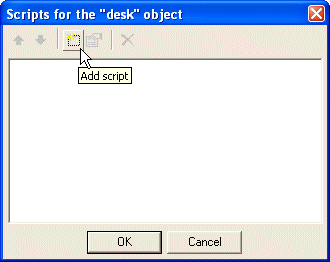
SceneEdit will ask you to specify a script file to assign. Browse to our “desk.script” file, select it and click OK.
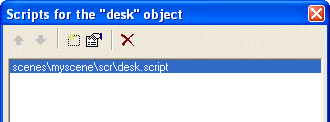
We will now edit the script. You can edit it either by pressing the “Edit script” button or by double clicking the script filename. SceneEdit will open the script in your associated text editor (by default it’s the Windows Notepad, learn more about setting up a text editor for the scripts).
|
|
If there is no script attached to a scene object yet, SceneEdit will prompt you to add a new script automatically after clicking the "Scripts..." button. You don't have to create it explicitly using ProjectMan. But I described the "hard way" here as well, so that you learn how to add new files to your project. |
The new script should look like this:
#include "scripts\base.inc"
////////////////////////////////////////////////////////////////////////////////
on "LookAt"
{
actor.GoToObject(this);
actor.Talk("Blah");
}
////////////////////////////////////////////////////////////////////////////////
on "Take"
{
actor.GoToObject(this);
actor.Talk("Blah");
}
.
.
.
|
The “on “xxx” {}” blocks are the “event handlers”. Those blocks of code are executed when a certain event is applied to the object. For example, when the user opens a menu on the desk entity and he select the “Look at” icon, a “LookAt” event is applied to the desk and the event handler is executed. There are high level events, such as the “LookAt” or “Talk” events, and those are fully customizable by the developer. Then there are low level events, such as “LeftClick”. The low level events are triggered by the engine itself and their names are hard-coded in the engine code.
Let’s have a look at the “LookAt” handler:
actor.GoToObject(this);
actor.Talk("Blah");
|
This piece of code tells the engine to call actor's “GoToObject” method and then make the actor to say “Blah”. The GoToObject method receives a parameter called 'this'. The 'this' word in any script represents the object the script is attached to. In this case, we're editing a script attached to desk, therefore 'this' represents the desk. So the command actor.GoToObject(this); translates to "tell the actor to go to the desk".
Now, that's great, but how does the engine know where exactly should the actor walk and from which side should he approach the desk? Well, it doesn't, you have to say that. All the entities in your scenes provide a "walk to point". You can see it down in the entity properties:
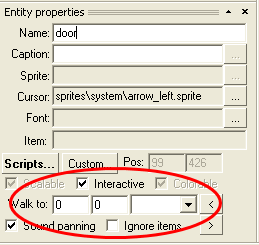
Now, you can either manually fill-in the requested walk-to point and actor's target direction, or you can use the actor placement tool (it’s described in step 6 of this tutorial) and position the actor interactively. Then simply press the "<" button and the position will be assigned to the entity. Similarly, if you press the ">" button, the actor will be positioned within scene accordingly to the entered values.
Try it. Return back to the SceneEdit and close the script dialog (by clicking OK). Press the “Place actor” and select the “molly.actor” file. Now setup the actor to the position where you want him to walk when looking at the desk (remember: you can move the actor by moving your mouse, you can change his direction by pressing the right mouse button and you finally anchor the actor in place by pressing the left mouse button).
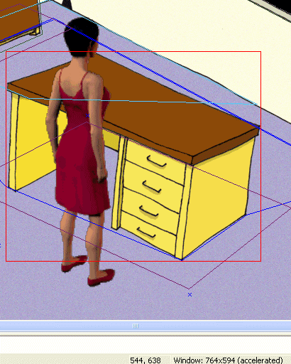
Now press the "<" button in the entity properties window (make sure the "desk" entity is still selected) and you're all set.
Sometimes it's useful to copy the literal actor's position to some script. Once again, the actor placement tool comes in handy. Place the actor to the desired position and use the “Actor->Copy actor placement” function or press the Ctrl+C hotkey.
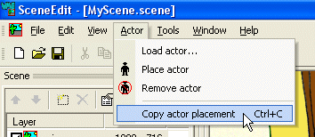
The following fragment of code will be copied to the clipboard:
actor.GoTo(544, 638); actor.TurnTo(DI_UPRIGHT); |
This code mimics the actor’s placement we just set in SceneEdit.
You can change the “Take” handler as well. The actor could say something “funny” when the player tries to pick up a desk.
on "Take"
{
actor.GoToObject(this);
actor.Talk("The desk is a bit too heavy for a poor little me...");
}
|
Since you can’t talk to the desk, you can delete the “Talk” handler altogether. A default “Talk” handler will be used when no other handler is found.
The “LeftClick” handler simply calls the GoToObject method. It means when the player clicks the desk, the actor will just walk to it.
OK, the script is complete. Save it, save the scene, quit the SceneEdit and switch back to ProjectMan.
Run the game and test the “MyScene” scene. Right click the desk and a menu will appear. Try clicking various icons. The actor should walk to the desk, turn to it and say an appropriate sentence.

You can add the scripts to the other scene objects exactly the same way. See the finished scripts in the “step7.scene” file.
OK, enough programming, let’s move to the next step of this tutorial, Step 8: Layers.